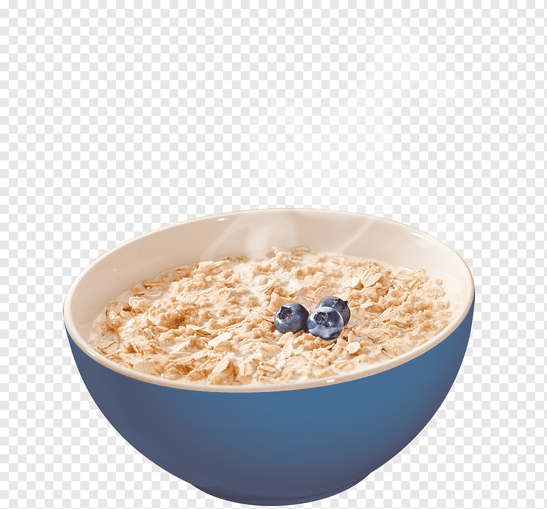

Recipe to make oatmeal

Description:
Here's a basic recipe to make oatmeal:
Ingrediants:
- 1 cup rolled oats (not instant oats)
- 2 cups water or milk (or a combination of both)
- Pinch of salt (optional)
-
Optional toppings: honey, maple syrup, fresh or dried fruits, nuts,
seeds, cinnamon, etc.
Steps:
-
Boil the Liquid:In a saucepan, bring 2 cups of water or
milk (or a combination) to a boil over medium-high heat.
-
Add Oats and Salt:Once the liquid is boiling, stir in 1
cup of rolled oats and a pinch of salt (if using).
-
Cook the Oats:Reduce the heat to medium-low to maintain
a gentle simmer.
Cook the oats uncovered for about 5 minutes, stirring occasionally. Adjust the cooking time depending on how thick or thin you prefer your oatmeal.
-
Stir Occasionally:Stir the oats occasionally to prevent sticking to the bottom of the pan and to ensure even cooking.
-
Check Consistency:After about 5 minutes, the oatmeal should have absorbed most of the liquid and become creamy. If you prefer a thicker consistency, cook for a few minutes longer.
-
Serve:Once the oatmeal reaches your desired consistency, remove the saucepan from the heat.
Let it sit for a minute or two to cool slightly and thicken further.